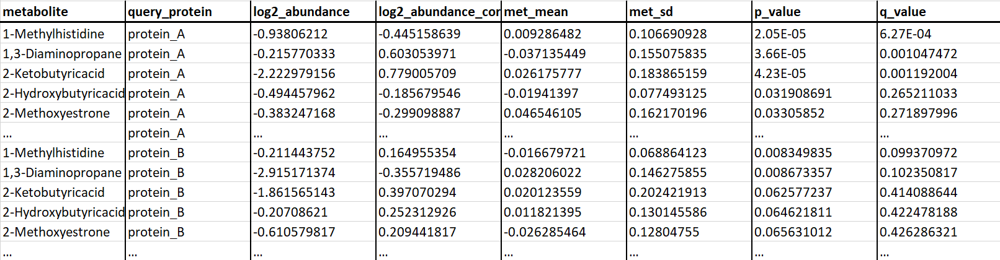

Select either a curated metabolic pathway with its assayed set of proteins or select an individual protein to view the relevant protein-metabolite interactions.
1.2 Buttons
Toggle between intra-pathway-only metabolites for the selected pathway or all assayed metabolites in the MIDAS database. This only applies when a pathway has been selected.
Toggle between 1-D scaling (where edge colors are scaled by q-value only and all edge widths are identical) and 2-D scaling (where edge widths are scaled according to the interaction's q-value and edge colors are scaled by the interaction's log2 fold change).
Change the q-value threshold to determine which protein-metabolite interactions are displayed. The default value is set at 0.1. Hovering over an edge will display the q-value of the protein-metabolite interaction.
q-value cut-off:
Click to toggle on or off absolute values for fold changes. By default, absolute fold changes for protein-metabolite interactios are displayed. Hovering over an edge will display the fold change of the protein-metabolite interaction.
Click to toggle on or off metabolite labels. By default, metabolite labels are displayed.
Click to toggle background pathway image on top or behind edges. By default, the pathway image is layered on top of the protein/metabolite nodes and edges. However, this can block certain edges' metadata from being displayed. However, toggling the pathway image back will allow for these edges' metadata to be displayed when hovering over a given edge.
Click to save the current graph view as an SVG.
1.3 Colors
1-D Scaling
Edge colors are scaled by q-value only and all edge widths are identical.
q-value: 0.10
2-D Scaling
Edge widths are scaled according to the interaction's q-value and edge colors are scaled by the interaction's log2 fold change.
q-value: 0.10
fold change: -55
2 Data
2.1 Uploading protein-metabolite interaction data
Input protein-metabolite tables can be uploaded by clicking the appropriate button (as shown below) and selecting the file corresponding to protein-metabolite interaction data.
2.2 Required input data formatting
Any protein-metabolite interaction data to be visualized and explored using Electrum must follow the following format style and must be exported as a tab-delimited data table with the file suffix ".txt"
